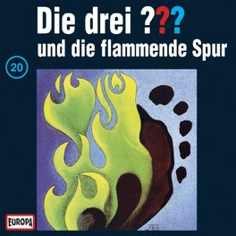

Die drei ??? und die flammende Spur
Nur selten verläßt der alte Töpfer, genannt der Potter, sein Haus in Rocky Beach. Doch nicht nur sein Eremitendasein macht die Einwohner mißtrauisch, auch sein Aussehen: Er hat langes weißes Haar, einen schönen gekämmten Vollbart, ein wallend weißes Gewand, und er geht immer barfuß. Außerdem trägt er um den Hals ein Medaillon aus Keramik, das einen scharlachroten Adler mit zwei Köpfen zeigt - ist das nicht höchst sonderbar? Plötzlich aber verschwindet er, obwohl er seine Tochter, Mrs. Dobson, und seinen Enkel Tom zu Besuch erwartet. Ist eine zufällige, kurze Begegnung mit den zwei etwas undurchsichtigen fremden Männern der Grund? Ein weiterer verdächtiger Mann, angeblich ein Sportfischer, hat offenbar ebenfalls die Finger in dieser geheimnisvollen Sache. Alle sind sie hinter dem Symbol eines zweiköpfigen Adlers her - so einem Adler, wie der Potter um den Hals hängen hat. Flammende Fußspuren und das Geräusch fließenden Wassers in der Leitung im Potterschen Haus bringen Mrs. Dobson an den Rand der Hysterie. Mit gewohntem Forscherdrang und üblicher Tatkraft versuchen die drei ???, hinter das Geheimnis zu kommen: Sollte der Potter etwa ein Edelmann aus Europa, der doppelköpfige Adler sein Emblem, sein wallendes Gewand eine wehmütige Erinnerung an einen fürstlichen Umhang sein? - Das Inkognito wahren - so heißt es oft bei Hoheiten, wenn sie unerkannt bleiben wollen...
Stream-Fragezeichen.de - Deine Seite um drei Fragezeichen Hörbücher aus deinem Streaming auszuwählen und zu hören.
Suche nach einzelnen Folgen und speichere sie in deiner Watch List oder verfolge deinen Hörverlauf.
Kostenloser und werbefreien Account erstellen: